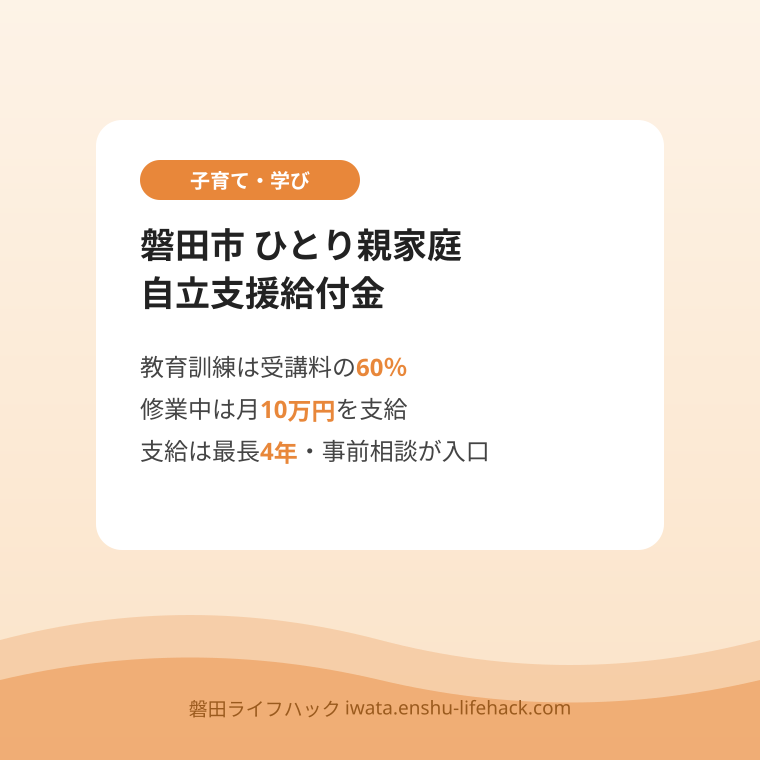

子育て・学び
磐田市のひとり親家庭自立支援給付金｜教育訓練は受講料の60％、資格の修業中は月10万円（非課税世帯）を最長4年

この記事の要点
Q. 磐田市のひとり親家庭自立支援給付金は、誰が・いくら受けられますか？
A. 市内在住で20歳未満の児童を養育する母子家庭の母・父子家庭の父が対象。教育訓練給付金は指定講座の受講料の60％（一般は上限20万円、専門実践は最大160万円、修了後の資格取得・就職で最大240万円まで追加の可能性）。高等職業訓練促進給付金は修業中（上限4年）に非課税世帯で月10万円・課税世帯で月7万500円。どちらの事業も受講前の事前相談が必須です。
ひとり親家庭の母または父が、就職に役立つ技能や資格を取るために学ぶとき、その費用と修業中の生活費を磐田市が支える制度があります。「ひとり親家庭自立支援給付金」です。磐田市公式ページ（ページ番号1001773、2026年9月3日更新）には、二つの事業が並んでいます。一つは講座の受講料の一部を支給する「自立支援教育訓練給付金事業」、もう一つは資格取得のために養成機関で修業する期間の生活費を支給する「高等職業訓練促進給付金等事業」です。
金額の目安は、教育訓練給付金が受講料の60％（一般の指定講座で上限20万円、専門実践教育訓練では条件により最大240万円まで広がる仕組み）、高等職業訓練促進給付金が市民税非課税世帯で月額10万円・課税世帯で月額7万500円を修業期間の全期間（上限4年）です。どちらの事業も、受講を始める前の事前相談が入口になっています。
この記事では、磐田市公式ページを実際に開いて、二つの事業の対象者、対象講座と対象資格、支給額と支給期間、事前相談の位置づけを確認しました。「働きながら資格を取りたいが、受講料と生活費の両方が重い」というひとり親家庭の悩みに、どこまで応える制度なのかを整理します。
まず結論｜学ぶ費用を出す事業と、修業中の生活費を出す事業の二本立て
結論から言うと、この制度は「学ぶ費用」と「学ぶ期間の生活費」を分けて支える二本立てです。短期間の講座で技能を身につけたい方には教育訓練給付金が、看護師や保育士などの資格を取るために養成機関へ通う方には高等職業訓練促進給付金が向いています。
教育訓練給付金は、雇用保険制度の教育訓練給付の指定講座を受講した場合に、入学金と受講料の60％相当額を支給する仕組みです。一般教育訓練・特定一般教育訓練の指定講座では上限20万円、専門実践教育訓練の指定講座では上限が年数に応じて広がります。
高等職業訓練促進給付金は、6か月以上のカリキュラムを修業する期間に、生活費として毎月支給されます。非課税世帯は月額10万円、課税世帯は月額7万500円で、修学期間の最後の1年間はそれぞれ4万円が増額されます。修了時には修了支援給付金も別に支給されます。
共通する前提は、市内に住み、20歳未満の児童を養育している母子家庭の母または父子家庭の父であること、そして受講前に必ず相談することです。市は公式ページに「資格を受講する前に必ずご相談ください」と明記しています。先に申し込んでしまった講座では対象にならない可能性があるため、順番が大切です。
対象者｜市内在住で20歳未満の児童を養育する母・父が基本
支給対象として市が示すのは、「母子家庭の母親及び父子家庭の父親で就職に役立つ技能や資格を習得される方」です。個別の事業ごとに細かな条件が加わります。
教育訓練給付金の対象は、市内に在住し20歳未満の児童を養育する方で、次の三つをすべて満たす方です。母子・父子自立支援プログラム策定等の支援を受けていること、過去に訓練給付金を受給していないこと、事前相談において受講の必要性が認められたことです。
高等職業訓練促進給付金の対象も、市内在住で20歳未満の児童を養育する方ですが、条件は六つあります。児童扶養手当を受給しているか、それと同様の所得水準にあること。養成機関で6か月以上のカリキュラムを修業し、対象資格の取得が見込まれること。就業または育児と修業の両立が困難であると認められることです。
残りの三つは、事前相談において資格取得の見込みや受講の必要性が認められたこと、訓練促進給付金と趣旨を同じくする給付金を受けていないこと、過去に訓練促進給付金と修了支援給付金の給付を受けていないことです。過去の受給歴が条件に入るため、「一度使ったかどうか」は早い段階で窓口と照合しておく必要があります。
どちらの事業も「一人につき一つまで」という考え方が貫かれています。教育訓練給付金は対象講座が一人1講座のみ、高等職業訓練促進給付金は対象資格が一人1資格のみです。講座や資格をいくつも並行して受ける前提の制度ではなく、就職につながる一つの目標に絞って使う制度だと理解してください。
教育訓練給付金｜受講料の60％、一般講座は上限20万円
教育訓練給付金の対象講座は、雇用保険制度の教育訓練給付指定講座です。受講したい講座が指定講座に載っているかどうかは、厚生労働省の「教育訓練給付制度・厚生労働大臣指定教育訓練講座検索システム」で検索して確認するよう、市は案内しています。
支給額の基本は、対象講座の入学金・受講料の60％相当額です。雇用保険制度による給付を受けられない方が一般教育訓練給付または特定一般教育訓練給付の指定講座を受講する場合は、上限20万円です。
専門実践教育訓練給付の指定講座を受講する場合は、上限が「40万円×修学年数（上限4年）」となり、最大160万円まで広がります。看護師や介護福祉士など、修学に年数のかかる資格を目指す場合に効いてくる設計です。
雇用保険制度による給付を受けられる方は、上の金額から雇用保険制度の教育訓練給付金の額を差し引いた額が支給されます。雇用保険側の支給額が市の定める上限額を超える場合は、市からは支給できません。二つの制度を重ねて満額ずつ受け取る形ではない点に注意が要ります。
もう一つの注意は下限です。支給額が1万2千円を超えない場合は支給できません。受講料の安い短い講座では、60％を計算してもこの下限に届かず、対象外になることがあります。受講料の総額を先に把握してから相談に行くと、話が具体的になります。

専門実践の追加支給｜修了後に資格を取って就職すると85％相当まで
専門実践教育訓練給付の指定講座を受講した方には、追加支給の仕組みがあります。教育訓練等を修了した日の翌日から1年以内に、その教育訓練等に係る資格を取得して就職等した場合に、申請により追加の給付が可能です。
追加後の水準は、対象講座の入学金・受講料の85％相当額で、上限は「60万円×修学年数」、最大240万円です。すでに支給した訓練給付金の金額を差し引いて支給されます。
つまり専門実践では、「受講中の60％」で終わらず、「修了→資格取得→就職」という結果までたどり着いた方に、もう一段の上乗せが用意されています。学び始める支援と、学び終えて働き始める支援を分けた設計です。
裏を返せば、修了から1年という期限と、資格取得・就職という条件の両方を満たさなければ追加分は出ません。修了後の動きまで含めて計画を立てることが、この上乗せを受け取る条件になります。
高等職業訓練促進給付金｜修業中は月10万円（非課税世帯）を最長4年
高等職業訓練促進給付金等事業は、就職に有利な資格を取得するために養成機関で訓練等を受ける場合に、一定期間、生活費として支給する事業です。受講料そのものではなく、学ぶ期間の暮らしを支える位置づけです。
支給期間は修業期間の全期間で、上限は4年です。支給額は、市民税非課税世帯が月額10万円、市民税課税世帯が月額7万500円。修学期間の最後の1年間は、それぞれ4万円が増額され、非課税世帯は月額14万円、課税世帯は月額11万500円になります。
修了時には修了支援給付金が支給されます。支給時期は養成課程の修了日を経過した日以後で、額は非課税世帯5万円、課税世帯2万5千円です。
対象資格は13種類が公式ページに列挙されています。看護師、准看護師、保育士、介護福祉士、作業療法士、理学療法士、歯科衛生士、美容師、社会福祉士、製菓衛生師、調理師、シスコシステムズ認定資格、LPI認定資格です。その他の資格については相談するよう案内されています。
情報関係の資格には扱いの注記もあります。雇用保険制度の一般教育訓練給付の指定講座を受講する場合は、情報関係の資格に限るとされています。IT系の資格を考えている方は、自分の目指す資格がどの枠に入るかを事前相談で確かめるのが先決です。

事前相談が入口｜受講してからでは遅い
この制度で最も大切なのは、順番です。市は公式ページの冒頭で「資格を受講する前に必ずご相談ください」と呼びかけ、どちらの事業の条件にも「事前相談において必要性が認められたこと」を入れています。
事前相談では、受けたい講座が指定講座かどうか、目指す資格が対象資格かどうか、過去の受給歴や所得水準が条件に合うかどうかを、一つずつ照合していくことになります。自分では対象だと思っていた講座が指定外だった、という行き違いを防ぐための段取りです。
教育訓練給付金では、受講希望の講座が厚生労働省の検索システムに掲載されているかを自分でも先に調べられます。検索結果を持って相談に行けば、窓口での確認は短く済みます。
高等職業訓練促進給付金では、養成機関のカリキュラムが6か月以上かどうか、修業と仕事・育児の両立が困難と認められる事情があるかどうかも相談の対象です。入学の申込みや学費の支払いの前に、入学予定の学校の資料を持って相談するのが安全です。
相談先は、磐田市公式ページ「ひとり親家庭自立支援給付金」（ページ番号1001773）で案内されています。ひとり親家庭への支援全体の入口は、市の公式サイトの子育て・教育の分野からたどれます。電話番号や担当課の最新情報は、公式ページ側で確認してください。
良い点｜受講料と生活費を分けて支え、結果への上乗せまである
良い点は、支援の狙いが分かれていることです。受講料の負担には教育訓練給付金、修業中の生活費には高等職業訓練促進給付金と、ひとり親家庭が学ぶときにぶつかる二つの壁に、それぞれ別の手当てがあります。
高等職業訓練促進給付金の月額10万円・最長4年という水準は、看護師や保育士のような年単位の修業を、働く時間を削りながら続ける家庭にとって現実的な支えです。最後の1年間に4万円が増額される設計も、国家試験や就職活動が重なる時期の負担を考えたものに見えます。
専門実践教育訓練の追加支給も、修了と資格取得と就職までを一続きに見た設計です。学び始めだけでなく、学び終えた先の就職まで制度が伴走する形になっています。
対象資格が13種類と具体的に列挙されている点も、利用者にとっては親切です。自分の目指す資格が載っているかどうかが、相談に行く前に自分で確かめられます。
注文したい点｜一人1講座・1資格の絞り込みと、下限の壁
注文したい点は、使い勝手の絞り込みの強さです。教育訓練給付金は一人1講座のみ、高等職業訓練促進給付金は一人1資格のみで、過去に受給したことがある方はどちらの事業でも対象から外れます。「まず短い講座で試して、次に本命の資格へ」という段階的な使い方には向きません。
教育訓練給付金の「支給額が1万2千円を超えない場合は支給できない」という下限も、受講料の安い入門講座ほど使えないという逆転を生みます。最初の一歩にこそ支援がほしい家庭には、少し冷たい線引きです。
また、雇用保険の教育訓練給付を受けられる方は市からの支給が差し引きになり、雇用保険側が市の上限を超えれば市からは出ません。二つの制度の関係は公式ページだけでは計算しにくく、結局は事前相談で個別に試算してもらうしかない構造です。相談前に目安を計算できる早見表のような資料があると、利用者は動きやすくなります。
対案・結論｜講座選びの前に「相談→指定確認→申込み」の順で動く
対案として提案したい進め方は、講座探しと並行して、早い段階で事前相談を予約してしまうことです。相談の場で、目指す資格が対象資格の13種類に入るか、講座が指定講座に載っているか、過去の受講歴や受給歴が条件に触れないかを先に潰しておきます。
次に、教育訓練給付金と高等職業訓練促進給付金のどちらが自分の学び方に合うかを決めます。数か月の講座で就職に直結する技能を取るなら教育訓練給付金、養成機関で年単位の修業をするなら高等職業訓練促進給付金です。両方は前提が違うため、混ぜて考えないことが大切です。
結論として、この給付金は「学び直しをしたい」という気持ちを、資格と就職の形に落とし込めた家庭にこそ届く制度です。金額の大きさよりも先に、対象資格・指定講座・事前相談の三点を固めることが、結果として一番の近道になります。
確認する順番｜資格、講座、受給歴、所得区分の四つをこの順で
確認は四つの順番で進めます。第一に資格です。目指す資格が対象資格の13種類に入っているか、その他の資格なら相談で認められる余地があるかを見ます。
第二に講座と学校です。教育訓練なら厚生労働省の検索システムで指定講座かどうかを、高等職業訓練なら養成機関のカリキュラムが6か月以上かどうかを確認します。
第三に自分の経歴です。過去に訓練給付金や訓練促進給付金を受けていないか、母子・父子自立支援プログラム策定等の支援を受けているか（または受けられるか）を整理します。
第四に所得の区分です。児童扶養手当の受給状況と、市民税の課税・非課税の区分で、高等職業訓練促進給付金の月額が10万円か7万500円かが決まります。修了支援給付金の額もこの区分で変わるため、直近の課税状況を手元に用意して相談に臨むのが確実です。
大石の視点｜「学ぶ時間」を買う支援は、ひとり親家庭にこそ要る
大石の視点として大切にしたいのは、高等職業訓練促進給付金が「生活費として」支給される点です。受講料の補助だけでは、働く時間を減らして学校へ通う間の家計は回りません。月額10万円という生活費の支えは、言い換えれば「学ぶ時間を買う」支援です。
ひとり親家庭の親が看護師や介護福祉士の資格を取ることは、その家庭の将来の収入を変えるだけでなく、磐田の医療・介護の現場に働き手が増えることにもつながります。個人への支援が、地域の人手不足への答えにもなる。そういう二重の意味を持つ制度だと感じます。
一方で、一人1資格・過去受給者は対象外という線引きは重く、失敗が許されにくい制度でもあります。だからこそ、受講前の相談で「本当に就職につながる資格か」を見極めることが、利用者と市の双方にとっての保険になります。焦って申し込まず、相談から始めてください。
まとめ
磐田市ひとり親家庭自立支援給付金は、市内在住で20歳未満の児童を養育する母子家庭の母・父子家庭の父が、就職に役立つ技能や資格を習得する過程を支える制度です。
- 教育訓練給付金は、雇用保険の教育訓練給付指定講座の入学金・受講料の60％を支給。一般・特定一般は上限20万円、専門実践は上限40万円×修学年数（最大160万円）。支給額が1万2千円を超えない場合は支給なし
- 専門実践では、修了後1年以内に資格を取得して就職等した場合、85％相当（上限60万円×修学年数、最大240万円）まで追加支給の可能性あり（既支給分は差し引き）
- 高等職業訓練促進給付金は、修業期間の全期間（上限4年）に生活費を支給。非課税世帯は月額10万円、課税世帯は月額7万500円で、最後の1年間は各4万円増額。修了支援給付金は非課税5万円・課税2万5千円
- 対象資格は看護師・准看護師・保育士・介護福祉士・作業療法士・理学療法士・歯科衛生士・美容師・社会福祉士・製菓衛生師・調理師・シスコシステムズ認定資格・LPI認定資格の13種類。どちらの事業も受講前の事前相談が必須で、過去の受給者は対象外
参考にした公式情報
- ひとり親家庭自立支援給付金／磐田市（ページ番号1001773、2026年9月3日更新。自立支援教育訓練給付金事業と高等職業訓練促進給付金等事業の対象者・対象講座と対象資格・支給額と支給期間・事前相談の案内を2026年11月27日確認）
- 磐田市公式ウェブサイト（ページ番号1001773で「ひとり親家庭自立支援給付金」の制度ページを確認、2026年11月27日確認）
最終確認日：2026-11-27 ／ 本記事は公表情報と執筆者の見解を分けて記載しています。制度・数値・公開状況は変更される場合があるため、最新情報は磐田市公式ページでご確認ください。